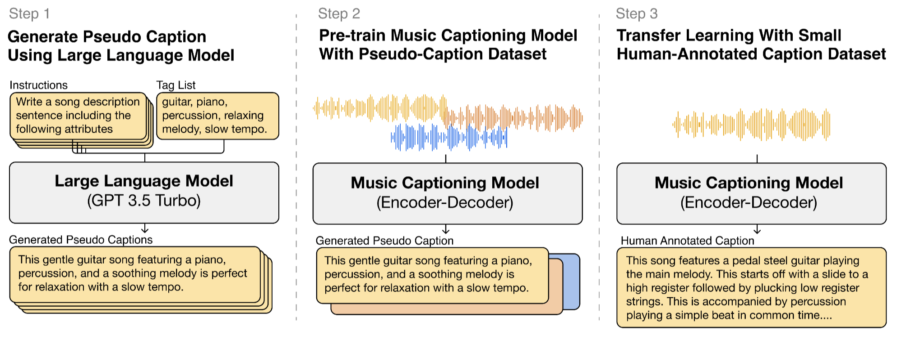

LP-MusicCaps: LLM-Based Pseudo Music Captioning
LP-MusicCaps: LLM-Based Pseudo Music Captioning, ISMIR 2023 (to appear) - SeungHeon Doh, Keunwoo Choi, Jongpil Lee, Juhan Nam
Abstract
Automatic music captioning, which generates natural language descriptions for given music tracks, holds significant potential for enhancing the understanding and organization of large volumes of musical data. Despite its importance, researchers face challenges due to the costly and time-consuming collection process of existing music-language datasets, which are limited in size. To address this data scarcity issue, we propose the use of large language models (LLMs) to artificially generate the description sentences from large-scale tag datasets. This results in approximately 2.2M captions paired with 0.5M audio clips. We term it {L}arge Language Model based {P}seudo music caption dataset, shortly, {LP-MusicCaps}. We conduct a systemic evaluation of the large-scale music captioning dataset with various quantitative evaluation metrics used in the field of natural language processing as well as human evaluation. In addition, we trained a transformer-based music captioning model with the dataset and evaluated it under zero-shot and transfer-learning settings. The results demonstrate that our proposed approach outperforms the supervised baseline model.
Will be updated